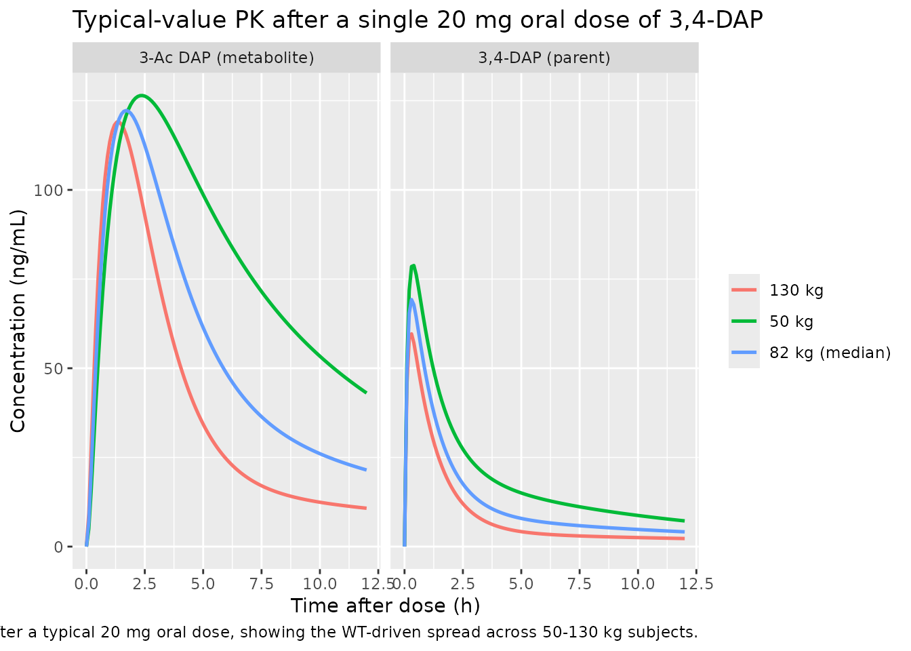
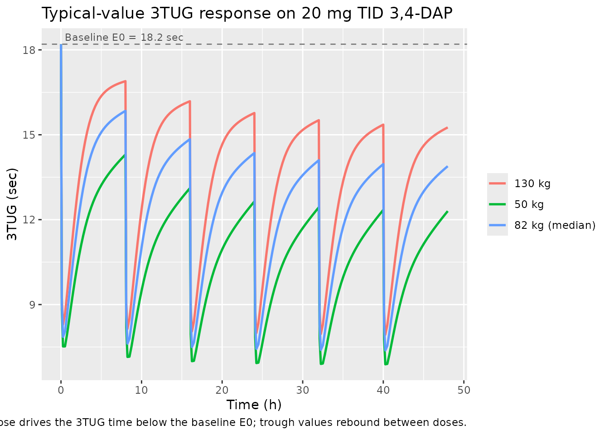

Amifampridine (Thakkar 2017)
Source:vignettes/articles/Thakkar_2017_amifampridine.Rmd
Thakkar_2017_amifampridine.RmdModel and source
- Citation: Thakkar N, Guptill JT, Ales K, Jacobus D, Jacobus L, Peloquin C, Cohen-Wolkowiez M, Gonzalez D, for the DAPPER Study Group. Population Pharmacokinetics/Pharmacodynamics of 3,4-Diaminopyridine Free Base in Patients With Lambert-Eaton Myasthenia. CPT Pharmacometrics Syst Pharmacol. 2017;6(9):625-634. doi:10.1002/psp4.12218. ClinicalTrials.gov NCT01511978.
- Description: Joint parent-metabolite population PK + fractional-Emax PD model for 3,4-diaminopyridine (3,4-DAP, amifampridine) free base and its N-acetyl metabolite 3-Ac DAP in 49 adults with Lambert-Eaton myasthenia (Thakkar 2017). Two-compartment parent + one-compartment metabolite with Fm fixed to 1 (all parent clearance forms metabolite). Body weight is allometrically scaled on CL/F and CLm/F3ACDAP (exponent 0.75 fixed) and linearly on Vp/F (exponent 1 fixed), all with reference weight 82 kg. Serum creatinine acts on CLm/F3ACDAP through (0.8/SCR)^0.7 with median SCR 0.8 mg/dL. The PD submodel describes the Triple Timed Up and Go (3TUG) score in seconds via a fractional-inhibitory Emax equation Effect = E0 * (1 - Emax * Cp / (EC50 + Cp)) where Cp is the parent 3,4-DAP plasma concentration in ng/mL.
- Article: https://doi.org/10.1002/psp4.12218
- ClinicalTrials.gov: https://clinicaltrials.gov/study/NCT01511978
Population
The published analysis is the DAPPER phase II multicenter
double-blind placebo-controlled withdrawal study (NCT01511978) of
3,4-diaminopyridine (3,4-DAP, amifampridine) free base in 49 adults with
Lambert-Eaton myasthenia on chronic 3,4-DAP free base treatment (Thakkar
2017 Table 1). Subjects had a median age of 60 years (range 23-83),
median body weight 82.6 kg (range 45.8-131.5 kg), median serum
creatinine 0.8 mg/dL (range 0.5-1.5 mg/dL), 47% male, 94% White, 2%
Hispanic. Patients received single oral 3,4-DAP free base doses of 10-30
mg (median 20 mg) administered 3-6 times daily; median total daily dose
was 80 mg (range 30-100 mg). The PK analysis used 1270 plasma samples
from 49 subjects; the PD analysis used 1091 Triple Timed Up and Go
(3TUG) measurements from 32 randomized patients. The same demographics
are available programmatically via
readModelDb("Thakkar_2017_amifampridine")$population.
Source trace
The per-parameter origin is recorded as an in-file comment next to
each ini() entry in
inst/modeldb/specificDrugs/Thakkar_2017_amifampridine.R.
The table below collects them in one place for review.
| Equation / parameter | Final value | Source location |
|---|---|---|
lka (KA) |
0.9 /h | Table 2, Final column |
lcl (CL/F at 82 kg) |
90 L/h | Table 2, Final column |
lvc (Vc/F) |
24 L | Table 2, Final column |
lq (Q/F) |
111 L/h | Table 2, Final column |
lvp (Vp/F at 82 kg) |
669 L | Table 2, Final column |
lcl_acdap (CLm/F3ACDAP at 82 kg, SCR 0.8) |
20.5 L/h | Table 2, Final column |
lvc_acdap (Vm/F3ACDAP) |
36 L | Table 2, Final column |
e_wt_cl (allometric exponent on CL) |
0.75 (fixed) | Methods Eq 3 |
e_wt_vp (linear exponent on Vp) |
1 (fixed) | Methods Eq 4 |
e_wt_cl_acdap (allometric exponent on CLm) |
0.75 (fixed) | Methods Eq 3 |
e_creat_cl_acdap (SCR power exponent on CLm) |
0.7 | Table 2 Final column (RSE 31.8%) |
etalcl + etalvc (correlated block, omega^2) |
(0.2082, 0.2926, 1.4649) | Table 2 CV(CL)=48.1%, CV(Vc)=182.4%, corr=0.53 (footnote d) |
etalka |
log(1 + 0.362^2) = 0.1239 | Table 2 IIV, KA = 36.2% CV |
etalq |
log(1 + 0.487^2) = 0.2122 | Table 2 IIV, Q/F = 48.7% CV |
etalvp |
log(1 + 0.898^2) = 0.6989 | Table 2 IIV, Vp/F = 89.8% CV |
etalcl_acdap |
log(1 + 0.386^2) = 0.1389 | Table 2 IIV, CLm/F3ACDAP = 38.6% CV |
propSd (3,4-DAP proportional) |
0.348 | Table 2 residual error, 3,4-DAP 34.8% |
propSd_acdap (3-Ac DAP proportional) |
0.201 | Table 2 residual error, 3-Ac DAP 20.1% |
logitemax (logit of fractional Emax) |
log(0.816/0.184) | Table 3 Final, Fractional Emax = 0.816 |
lec50 (EC50) |
log(29.8) | Table 3 Final, EC50 = 29.8 ng/mL (273 nM) |
le0 (baseline 3TUG) |
log(18.2) | Table 3 Final, E0 = 18.2 sec |
etalogitemax (logit-scale variance) |
2.93 | Table 3 IIV, Fractional Emax variance = 2.93 |
etalec50 |
log(1 + 0.883^2) = 0.5760 | Table 3 IIV, EC50 = 88.3% CV |
etale0 |
log(1 + 0.713^2) = 0.4109 | Table 3 IIV, E0 = 71.3% CV |
propSd_tug3 (3TUG proportional) |
0.214 | Table 3 residual error, 21.4% |
| Equation: 2-cmt parent + 1-cmt metabolite, Fm fixed to 1 | n/a | Methods, “Fm was fixed to 1 to obtain an identifiable model”; Figure 1 schematic |
| Equation: WT allometric scaling | n/a | Methods Eqs 3 and 4 with reference WT 82 kg |
| Equation: SCR power-form on CLm | n/a | Table 2 footnote c:
CLm/F3ACDAP = 20.5*(WT/82)^0.75 *(0.8/SCR)^0.7
|
| Equation: PD fractional-inhibitory Emax | n/a | Results section, “Effect (sec) = 18.2(1 - 0.816Cp/(29.8 + Cp))” |
Virtual cohort
Original observed data are not publicly available. The simulations below use typical-value individuals spanning the published weight range (Thakkar 2017 Table 1: 45.8-131.5 kg) at the population-median serum creatinine of 0.8 mg/dL, so the WT-allometric effect on CL, Vp, and CLm is visible across subjects while the renal-function ratio stays at 1.
Simulation
Two scenarios drawn from the paper’s Table 4 dosing-simulation grid:
(a) a single oral 20 mg dose of 3,4-DAP free base, observed densely over
12 h; (b) the most clinically common multiple-dose regimen of 20 mg TID
(q8h) over 48 h, sampled densely around each dose. Concentrations are
reported in ng/mL (the paper’s PK modeling unit; the corresponding nM
values are obtained as Cc * 1000 / 109.13 for 3,4-DAP and
Cc_acdap * 1000 / 151.18 for 3-Ac DAP per Methods).
mod_typical <- readModelDb("Thakkar_2017_amifampridine") |> rxode2::zeroRe()
build_events <- function(cov_df, obs_times, dose_events) {
events_list <- lapply(seq_len(nrow(cov_df)), function(i) {
row <- cov_df[i, , drop = FALSE]
dose_rows <- dose_events |>
mutate(id = row$id,
WT = row$WT,
CREAT = row$CREAT,
cohort = as.character(row$cohort))
obs_rows <- data.frame(
id = row$id,
time = obs_times,
amt = NA_real_,
evid = 0L,
cmt = "Cc",
WT = row$WT,
CREAT = row$CREAT,
cohort = as.character(row$cohort),
stringsAsFactors = FALSE
)
dplyr::bind_rows(dose_rows, obs_rows)
})
dplyr::bind_rows(events_list) |> arrange(id, time, evid)
}
# (a) 20 mg single oral dose, 0-12 h
single_dose <- data.frame(
time = 0, amt = 20, evid = 1L, cmt = "depot",
stringsAsFactors = FALSE
)
events_single <- build_events(
cov_df,
obs_times = seq(0, 12, by = 0.1),
dose_events = single_dose
)
sim_single <- rxode2::rxSolve(
mod_typical,
events = events_single,
keep = c("WT", "CREAT", "cohort")
) |> as.data.frame()
#> ℹ omega/sigma items treated as zero: 'etalcl', 'etalvc', 'etalka', 'etalq', 'etalvp', 'etalcl_acdap', 'etalogitemax', 'etalec50', 'etale0'
#> Warning: multi-subject simulation without without 'omega'
# (b) 20 mg TID (q8h) over 48 h
multi_dose <- data.frame(
time = seq(0, 40, by = 8),
amt = 20,
evid = 1L,
cmt = "depot",
stringsAsFactors = FALSE
)
obs_times_multi <- sort(unique(c(
seq(0, 48, by = 0.25),
c(0.1, 0.5, 1, 2, 4, 8) +
rep(seq(0, 40, by = 8), each = 6)
)))
obs_times_multi <- obs_times_multi[obs_times_multi <= 48]
events_multi <- build_events(
cov_df,
obs_times = obs_times_multi,
dose_events = multi_dose
)
sim_multi <- rxode2::rxSolve(
mod_typical,
events = events_multi,
keep = c("WT", "CREAT", "cohort")
) |> as.data.frame()
#> ℹ omega/sigma items treated as zero: 'etalcl', 'etalvc', 'etalka', 'etalq', 'etalvp', 'etalcl_acdap', 'etalogitemax', 'etalec50', 'etale0'
#> Warning: multi-subject simulation without without 'omega'Replicate published figures
Concentration vs time after single 20 mg dose
plot_single <- sim_single |>
pivot_longer(cols = c(Cc, Cc_acdap),
names_to = "species", values_to = "conc") |>
mutate(species = recode(species,
"Cc" = "3,4-DAP (parent)",
"Cc_acdap" = "3-Ac DAP (metabolite)"))
ggplot(plot_single, aes(time, conc, color = cohort)) +
geom_line(linewidth = 0.9) +
facet_wrap(~species, ncol = 2) +
labs(x = "Time after dose (h)", y = "Concentration (ng/mL)",
color = NULL,
title = "Typical-value PK after a single 20 mg oral dose of 3,4-DAP",
caption = paste("Reproduces the qualitative shape of Thakkar 2017 Figure 1",
"after a typical 20 mg oral dose, showing the WT-driven",
"spread across 50-130 kg subjects."))
3TUG response after 20 mg TID
ggplot(sim_multi, aes(time, tug3, color = cohort)) +
geom_line(linewidth = 0.9) +
geom_hline(yintercept = 18.2, linetype = "dashed", color = "grey50") +
annotate("text", x = 0.5, y = 18.2, label = "Baseline E0 = 18.2 sec",
hjust = 0, vjust = -0.5, color = "grey30", size = 3) +
labs(x = "Time (h)", y = "3TUG (sec)", color = NULL,
title = "Typical-value 3TUG response on 20 mg TID 3,4-DAP",
caption = paste("Fractional-inhibitory Emax model. Each dose drives the",
"3TUG time below the baseline E0; trough values rebound",
"between doses."))
PKNCA validation
Single-dose NCA over 0-12 h after the 20 mg oral dose, computed separately for the 3,4-DAP parent and the 3-Ac DAP metabolite.
3,4-DAP parent
sim_nca_parent <- sim_single |>
filter(!is.na(Cc), time > 0) |>
select(id, time, Cc, cohort)
dose_df <- events_single |>
filter(evid == 1L) |>
select(id, time, amt, cohort) |>
distinct()
conc_obj_parent <- PKNCA::PKNCAconc(
sim_nca_parent, Cc ~ time | cohort + id,
concu = "ng/mL", timeu = "h"
)
dose_obj <- PKNCA::PKNCAdose(
dose_df, amt ~ time | cohort + id, doseu = "mg"
)
intervals <- data.frame(
start = 0,
end = 12,
cmax = TRUE,
tmax = TRUE,
auclast = TRUE,
aucinf.obs = TRUE,
half.life = TRUE
)
nca_parent <- PKNCA::pk.nca(
PKNCA::PKNCAdata(conc_obj_parent, dose_obj, intervals = intervals)
)
#> Warning: Requesting an AUC range starting (0) before the first measurement (0.1) is not allowed
#> Requesting an AUC range starting (0) before the first measurement (0.1) is not allowed
#> Requesting an AUC range starting (0) before the first measurement (0.1) is not allowed
#> Requesting an AUC range starting (0) before the first measurement (0.1) is not allowed
#> Requesting an AUC range starting (0) before the first measurement (0.1) is not allowed
#> Requesting an AUC range starting (0) before the first measurement (0.1) is not allowed
knitr::kable(as.data.frame(summary(nca_parent)),
caption = "3,4-DAP parent NCA after a single 20 mg oral dose.")| Interval Start | Interval End | cohort | N | AUClast (h*ng/mL) | Cmax (ng/mL) | Tmax (h) | Half-life (h) | AUCinf,obs (h*ng/mL) |
|---|---|---|---|---|---|---|---|---|
| 0 | 12 | 130 kg | 1 | NC | 59.6 | 0.300 | 12.1 | NC |
| 0 | 12 | 50 kg | 1 | NC | 78.8 | 0.400 | 7.13 | NC |
| 0 | 12 | 82 kg (median) | 1 | NC | 69.2 | 0.300 | 9.20 | NC |
3-Ac DAP metabolite
sim_nca_metab <- sim_single |>
filter(!is.na(Cc_acdap), time > 0) |>
select(id, time, Cc_acdap, cohort) |>
rename(Cc = Cc_acdap)
conc_obj_metab <- PKNCA::PKNCAconc(
sim_nca_metab, Cc ~ time | cohort + id,
concu = "ng/mL", timeu = "h"
)
nca_metab <- PKNCA::pk.nca(
PKNCA::PKNCAdata(conc_obj_metab, dose_obj, intervals = intervals)
)
#> Warning: Requesting an AUC range starting (0) before the first measurement (0.1) is not allowed
#> Requesting an AUC range starting (0) before the first measurement (0.1) is not allowed
#> Requesting an AUC range starting (0) before the first measurement (0.1) is not allowed
#> Requesting an AUC range starting (0) before the first measurement (0.1) is not allowed
#> Requesting an AUC range starting (0) before the first measurement (0.1) is not allowed
#> Requesting an AUC range starting (0) before the first measurement (0.1) is not allowed
knitr::kable(as.data.frame(summary(nca_metab)),
caption = "3-Ac DAP metabolite NCA after a single 20 mg oral dose.")| Interval Start | Interval End | cohort | N | AUClast (h*ng/mL) | Cmax (ng/mL) | Tmax (h) | Half-life (h) | AUCinf,obs (h*ng/mL) |
|---|---|---|---|---|---|---|---|---|
| 0 | 12 | 130 kg | 1 | NC | 119 | 1.40 | 10.6 | NC |
| 0 | 12 | 50 kg | 1 | NC | 126 | 2.40 | 6.43 | NC |
| 0 | 12 | 82 kg (median) | 1 | NC | 122 | 1.70 | 7.70 | NC |
Comparison against previously published values
Thakkar 2017 Discussion cites an earlier IV study (reference 12: Wirtz et al. 2009) reporting a 3,4-DAP steady-state volume of distribution of 159 L and total clearance of 118 L/h. The Thakkar 2017 final model (CL/F = 90 L/h, Vc/F + Vp/F = 24 + 669 = 693 L apparent volume of distribution at steady state) is broadly comparable for clearance but apparent volumes are substantially larger because the present model uses oral apparent parameters (divided by bioavailability F) whereas the cited reference used IV true parameters. The Discussion states: “The population estimates obtained in our study (3,4-DAP Vc/F and CL/F of 24 L and 90 L/h, respectively) are comparable to the previously published values for patients with LEM (34 L and 118 L/h).” The 3,4-DAP plasma half-life is reported as 0.5-2 h in earlier literature; with the present model’s micro constants the parent concentration falls below LOQ by ~12 h after a single 20 mg dose, consistent with that range.
Assumptions and deviations
-
Plasma observed-concentration unit. The model
reports
CcandCc_acdapin ng/mL via an explicit1000 *factor in the observation equations (dose in mg, apparent volume in L; 1 mg/L = 1000 ng/mL). The paper’s Figure 1 displays nM but Table 2 parameters and the EC50 estimate (29.8 ng/mL) are reported in mass-per-volume units; ng/mL is carried through here so the EC50 enters the PD equation in its native unit. -
Fm fixed to 1. Per Methods 2.4, the paper
structurally fixed the fraction of 3,4-DAP converted to 3-Ac DAP to 1 to
obtain an identifiable model, with all metabolite clearance and volume
parameters reported relative to
F3ACDAP = Fm * F. The model encodes this exactly: the parent CL flux feeds the metabolite compartment in full and the metabolite apparent volume / clearance absorb the (unidentifiable) bioavailability scaling. -
Allometric and SCR exponents are wrapped in
fixed()as the source paper holds them constant. The 0.75 and 1 allometric exponents on CL / Vp are fixed by the literature convention (Methods Eqs 3 and 4); the SCR exponent of 0.7 on CLm/F3ACDAP is estimated and is reported as a free parameter in Table 2. - Interoccasion variability omitted. The paper evaluated an IOV term on CL across the three inpatient stages and found it small (8%); the final reported model does not include IOV (Results “interoccasion variability … was not included in the final model”). The model matches the paper’s final form.
- Acetylator status not included as a covariate. NAT2 genotype was available for only 11/49 patients and the forward-backward covariate selection did not retain it in the final model (Results paragraph on population PK model evaluation). The model therefore takes no acetylator-status input.
- PD covariates none. The paper’s PD covariate analysis found that “no covariates resulted in statistically significant reduction in the OFV” (Results paragraph on sequential PK/PD model development). The Emax model is therefore a purely structural relationship with BSV on the three structural parameters and no covariate effects.
- Below-quantification (BQL) handling. Source dataset BQL samples (26/1270, 2%) were imputed to zero during fitting; the paper found similar estimates after discarding BQL data (Discussion paragraph on BQL handling). The model encodes only the structural form; users preparing input datasets for re-fitting should follow whichever BQL rule matches their downstream analysis.
-
3TUG variable name. Thakkar 2017 names the response
“3TUG” but R identifiers cannot start with a digit; the model uses
tug3as the observation-variable name with the residual-error parameterpropSd_tug3. The semantic meaning is unchanged.